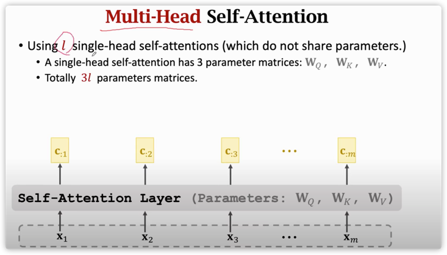
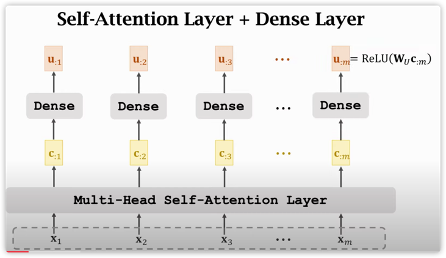
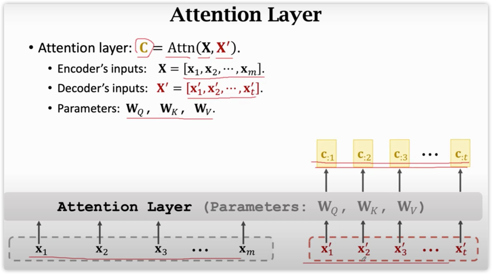
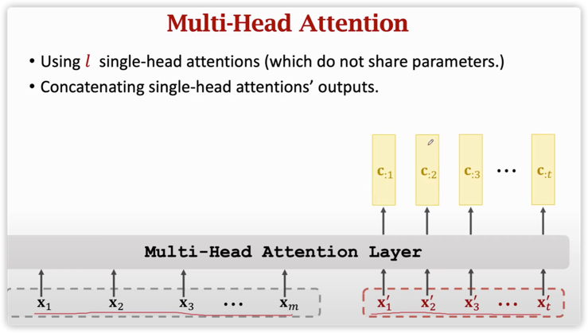
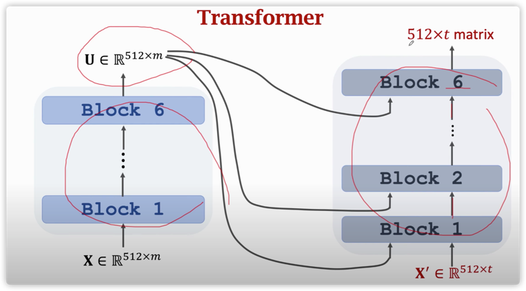
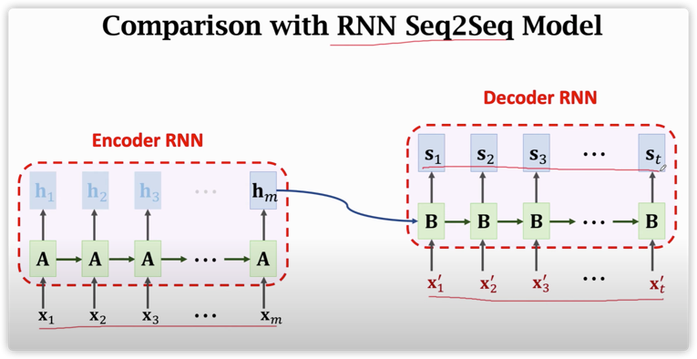

chapter 4.6 深度学习6 Transformer
Transformer总结
- Transformer是google2016年在《attention is all you need》提出的一个机器翻译模型，是一个很典型的seq2seq架构。
- Transformer的亮点在于将attention和self-attention完全剥离开之前rnn的结构，只跟dense层组合。
- Transformer跟RNN没有关系, 只有attention和全连接层
- Transformer比所有的rnn+attention效果都要好，机器翻译的王者
- Transformer是一个翻译模型，在机器翻译任务中，eg德译英，输入一个德文句子，输出十一句英文。
- Transformer由两部分组成：encoders和decoders
- encoders由6个encoder堆叠而成，decoders由6个decoder堆叠而成，一个encoder或一个decoder叫做一个block。
- encoders的每个block有2层：self-attention和dense，每个block结构相同，但不共享权重。
- decoders的每个block有3层：self-attention，attention和dense，其中attenton用来关注encoder的输出，
- attention技术的演进：attention + 基于rnn的seq2seq --> self-attention + lstm --> attention/self attention + dense.
- "多头"注意机制扩展了模型关注不同位置的能力, 给予attention层多个"表示子空间", 每个头有自己的一组query / key / value 权重矩阵，当于审视多次上下文，
附录
输入和位置编码
- 和一般的NLP任务一样，用embedding algorithm将每个输入单词转化为词向量之后，才能作为Transformer的输入使用。
- 如下图，3个单词被embedded为3个512维的向量

- 接下来，将这3个512维的词向量传入self-attention和dense层

- 位置编码（Positional Encoding）表示序列的顺序, 为了让模型学习到词的顺序关系，transformer向每个输入embedding向量（x1）又加上一个位置编码向量（t1）。

- 假设embedding的维度是4，那么实际的位置编码看起来是这样的:

多头self attention
- 每个单头self-attention层有三个参数矩阵，单头的context vector是一个d * m维的矩阵

- 多头attention层就有3l个参数矩阵（l代表头的个数），多头的context vector是一个(dl) m维的矩阵 

- 类似上面提到的单头self-attention计算，我们现在只是用8个不同的权重矩阵算了8次，并且得到了8个不同的 z 矩阵

- 当解读一个句子中的一个word时， Transforme中的encoder通过self-attention来回顾上下文信息，找出输入序列中的重要的word，从而更关注重要信息，并且会把重要word的value vector编码到自己的向量里面去。 RNN通过hidden state策略，使得它将当前词与上下文（准确来说只有上文）的信息进行融合。
- self-attention的输入是m个词向量，输出是m个context vector，vector表示融合了上下文之后，对word再次编码。


- 如何实现self-attention layer？即如何实现计算context vector？
- step1: 对于每个输入的word的此向量分别计算3个表示向量：
- Query vector： \(q_i\), to match others；
- Key vector：\(k_i\), to be matched；
- Value vector：\(v_i\) to be weighted averaged 。
- 这些向量是通过将输入的词向量做三次线性变换得到的，当然对应的三个矩阵是需要学习的。
- 请注意，得到的新向量的维度（64）比embedding（512）小。这么设计为了保证，加入多头self-attention之后，encoder的输出和输入维度（512）还能保持一致。 > 8头 * 64 = 512
- step2: 计算权重分数, 目的是量化其他单词应该被关注的程度。
- 计算当前单词的query vector和其他单词的key vector的内积
- step3: 权重分数归一化。将上一步算出来的权重得分向量（长度为m）进行归一化，目的是让权重不要受到key vector的长度（paper里面是64）的影响，这样算梯度就更稳定。
- step4：将归一化的权重得分向量（长度为m）送入softmax，目的是得到一个概率向量，所有数值加起来为1。示每个单词应该被当前单词关注的程度，值越大越应该被关注。。
- step5：计算contect vector。将每个单词的value vector使用权重概率向量进行加权求和，作为当前单词的self-attention表达（输出长度为64 * 8个头 = 512）。
- 把刚刚的过程再加入一个维度，也就是从一个单词 变成 多个单词，计算他们各自的self-attention表示，用矩阵表达该计算流程：
- 第一步是计算 Query、 Key 和 Value 矩阵：
- 我们将embeddings塞到一个矩阵x：行数表示单词个数，列表示embedding的长度
- 权重矩阵(WQ、 WK、 WV）：行代表embedding向量的长度，列分别代表query空间，key空间，value空间的维度
- X分别和这几个矩阵相乘

- 第二步，利用第一步的结果来计算attention的输出，用一个矩阵计算来表达，简洁优雅

dense层
- 后面怎么跟dense层进行衔接呢？1. 将这8个z矩阵进行列拼接（concat）；2. 拼接后的矩阵大小为m(864) = m *512，丢入dense层

- 这就是multi-headed self-attention的大部分内容。把整个过程放在一个图中描述：

encoder block = 多头self-attention + dense layer
- encoder block ≈ 多头self-attention + dense。encoder block的输入维度是512×𝑚，输出维度是512×𝑚.
- 以一个短句为例,看看encoder的处理流程:
- 将[x1，...,xm]输入多头self-attention层, 得到m个context vector
- 将m个context vector输入dense + relu，得到m个重新编码后的向量[u1,...,um]，dense层对m个word生效。
- 将[u1,...,um]传递给下一个编码器encoder2作为输入。 

残差连接和layer-normalization
- 每个encoder block中，self-attention和dense都有一个残差连接，然后接一个层标准化（layer-normalization）。

- 如果我们将残差连接和layer normalization用矩阵表示，就是下图：

- decoder的sub-layers 也同样用到了add & normalization的设计。 下图是一个简化版的Transformer架构：由2个stacked encoder和2个stacked decoder组成。

- 更准确来说 encoder block = positional codeing + 多头self-attention + add & normalizatioin + dense layer + add & normalizatioin
encoder network = 6 * encoder block
encoder network is a stack of 6 encoder blocks.
多头attention
- 单头attention层，要计算3个向量，先计算q跟每个k的相关性（求内积），然后做softmax变换得到权重得分，对所有的v使用该权重求和，得到decoder的这个词相对encoder的表示，也就是context vector。

- decoder中的attention，q来自两部分：下面的decoder的输出和最上面encoder中的Keys矩阵和Values矩阵 。


- Attention 层的Queries
 

decoder block = 多头self-attention + 多头attention + dense layer
 1. 1个decoder block ≈ 多头self-attention + 多头attention + dense。decoder block的输入有两个，一个是encoder的输出（512×m）， 一个来自decoder当前的的输出（512×t ）. 2. encoding阶段（phase）完成后，我们开始decoding阶段，decoding的每个step描述如下：
1. 1个decoder block ≈ 多头self-attention + 多头attention + dense。decoder block的输入有两个，一个是encoder的输出（512×m）， 一个来自decoder当前的的输出（512×t ）. 2. encoding阶段（phase）完成后，我们开始decoding阶段，decoding的每个step描述如下： 
 1. 每个时刻，输入第6个encoder产生的m个keys vectors和value vectors，输出一个element的概率分布pdf。 2. 从pdf中抽样出word（或者直接选择概率最大的word），作为decoder的输入。 3. 重复step1，直到产生结束符。 3. decoder也会用到位置编码. 4. decoder中的self attention layers:与encoder的运作方式略有不同,在decoder中，self-attention layer只能接触到输出序列中的前半部分。怎么做到呢？在softmax操作之前，masking序列后半部分(设为 -inf)
1. 每个时刻，输入第6个encoder产生的m个keys vectors和value vectors，输出一个element的概率分布pdf。 2. 从pdf中抽样出word（或者直接选择概率最大的word），作为decoder的输入。 3. 重复step1，直到产生结束符。 3. decoder也会用到位置编码. 4. decoder中的self attention layers:与encoder的运作方式略有不同,在decoder中，self-attention layer只能接触到输出序列中的前半部分。怎么做到呢？在softmax操作之前，masking序列后半部分(设为 -inf)
decoder network = 6 * decoder block
Decoder network is a stack of 6 decoder blocks.


stack decoders输出一个数值向量。 我们怎么把它变成一个词呢？ 这是最后的dense层+softmax在做的事情。它将stack of decoders的输出映射为一个权重向量。（长度就是输出词汇表的大小）
这个图从底部开始，生成一个vector作为decoder stack的输出。 然后它被转换成一个输出单词。

Transformer = encoder network+ decoder network
  

训练
学习的目标？ 将模型输出与目标输出进行比较，然后使用反向传播方法调整模型的权重，使模型输出更接近目标输出。
如何比较两种概率分布？ 可查看 cross-entropy和 Kullback-Leibler. 。
目标概率分布：

模型输出：
应用的一个例子
参考
- Bahdanau, Cho, & Bengio. Neural machine translation by jointly learning to align and translate. In ICLR, 2015.
- Cheng, Dong, & Lapata. Long Short-Term Memory-Networks for Machine Reading. In EMNLP, 2016.
- Vaswani et al. Attention Is All You Need. In NIPS, 2017.
- Transformer模型(2/2): 从Attention层到Transformer网络